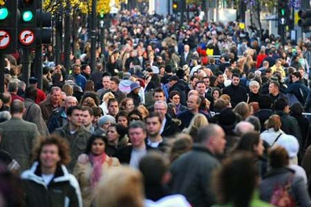
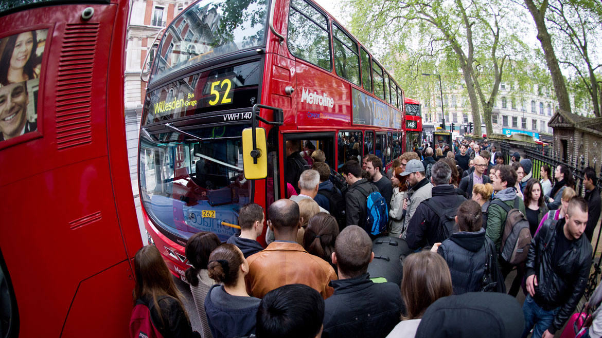

Demografia de Londres

Con la industrialización la población de Londres creció rápidamente en los siglos XIX y XX, tanto que durante gran parte del siglo XIX y principios del siglo XX fue la ciudad más populosa del mundo, hasta que Nueva York la superó en 1925. El número de habitantes de la capital alcanzó un pico de 8 615 245 en 1939, inmediatamente antes del estallido de la Segunda Guerra Mundial. En la segunda mitad de ese siglo el número total descendió ligeramente, pues en el censo de 2001 eran 7 192 091. Sin embargo, en la primera década del presente siglo el total de habitantes volvió a crecer hasta los 8 173 941 y, según las estimaciones de la Autoridad del Gran Londres, basadas en los nacimientos, defunciones y patrones migratorios desde el censo de 2011, a principios de 2015 se superó ya el máximo histórico de población registrado en 1939.142 Hay que tener en cuenta que los límites del área urbana se extienden más allá de las fronteras del Gran Londres y ésta sumaba 8 278 251 habitantes en 2001, mientras que el total de su área metropolitana se encuentra entre los doce y los catorce millones, dependiendo de la cuenta.23 24 Según Eurostat, la oficina estadística de la Unión Europea, Londres es el área metropolitana más poblada de toda la Unión Europea y la segunda del continente (la tercera si contamos a Estambul). Solo en la década de 1991 a 2001 llegaron a Londres 726.000 inmigrantes.143 La región londinense cubre un área total de 1579 km² y tiene una densidad de población de 5177 habitantes por km²,144 diez veces más que cualquier otra r egión de Inglaterra. En términos de población total, Londres ocupa el puesto diecinueve entre las ciudades más populosas del mundo y el dieciocho en la lista de áreas metropolitanas. También es la cuarta ciudad del mundo en la que viven más mil millonarios (en dólares estadounidenses)145 y una de las ciudades con el nivel de vida más caro, junto con Tokio y Moscú.

Según la Office for National Statistics británica, y sobre la base de las estimaciones del censo de 2011, el 59,8 % de los 8 173 941 habitantes de Londres son de raza blanca, distribuidos así: 44,9 % blancos británicos, 2,2 % blancos irlandeses, 0,1 % gitanos y nómadas irlandeses y 12,1 % clasificados como «otros blancos».148 El 20,9 % de los londinenses son asiáticos o descendientes de parejas mixtas con asiáticos: el 19,7 % desciende de asiáticos plenos y el 1,2 % restante de parejas mixtas. Los indios son el 6,6 % de la población, seguidos de bangladesíes y pakistaníes, que son el 2,7 % cada uno. Los chinos suponen un 1,5 % y los árabes el 1,3 %. Otro 4,9 % se clasifica como «otros asiáticos».148 El 15,6 % de los habitantes de la capital británica son negros o tienen algún antepasado de raza negra. El 13,3 % son completamente negros y el 2,3 % mestizos. Los negros africanos son un 7,0 %, el 4,2 % negros caribeños y el 2,1 % «otros negros». El 5,0 % de los londinenses son multirraciales.
En todo Londres los niños de raza negra y asiática superan en número a los niños blancos británicos en una proporción de seis a cuatro en las escuelas públicas.149 Sin embargo, los niños blancos representan el 62 % de los 1 498 700 habitantes de la ciudad que tienen menos de 15 años (el 55,7 % blancos británicos, el 0,7 % blancos irlandeses y el 5,7 % blancos de otras naciones de UE).150 Un estudio de la diversidad étnica y religiosa de Londres realizado en 2005 afirmaba que en la metrópolis se hablaban más de 300 idiomas y que vivían más de cincuenta comunidades foráneas con más de 10 000 miembros cada una. 151 Las cifras de la Office for National Statistics muestran que a fecha de 2010 la población londinense nacida en el extranjero era de 2 650 000 (el 33%), frente al 1 630 000 del año 1997.148 El censo de 2011 mostró que el 36,7 % de la población del Gran Londres había nacido fuera del Reino Unido.152 La tabla de la derecha desgrana los países de nacimiento de las comunidades foráneas más numerosas de la ciudad, a fecha de 2011, que es el censo más reciente realizado.141 Una parte importante de la población londinense nacida en Alemania es probable que sean británicos hijos de miembros de las Fuerzas Armadas Británicas que tienen padres sirviendo en Alemania.153 Las estimaciones elaboradas por la Office for National Statistics indican que las cinco comunidades foráneas más numerosas de la urbe son las de nacidos en India, Polonia, Irlanda, Pakistán y Nigeria.154